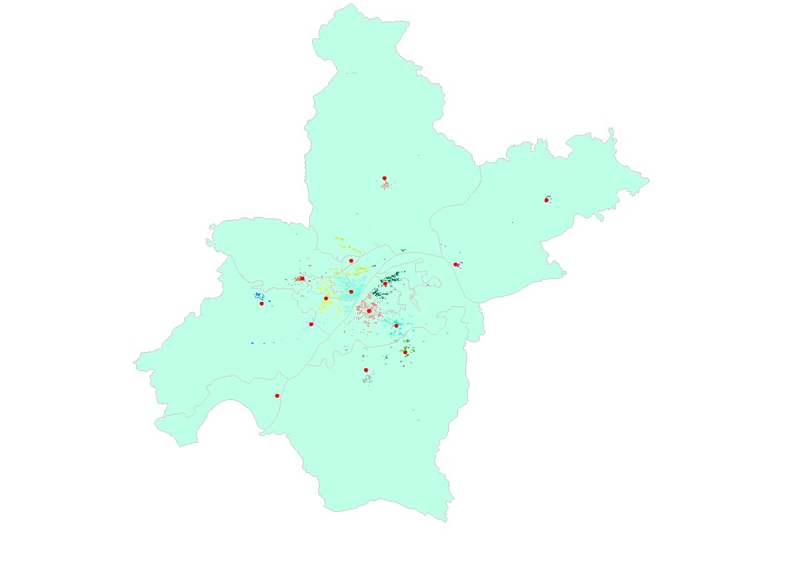

返回

聚类分析&预测
该板块使用机器学习中的K均值算法，利用部分商家的经纬度坐标数据进行聚类，目的是预测武汉市的主流核心功能区，与武汉实际经济发展区域相对比，并且可以利用聚类后的结果判断未使用到经纬度坐标的商家属于哪个核心功能区。
我们尝试了几个聚类数目，结合实际最终确定为15个。图中红色的点为聚类中心，不同颜色的点是划分的不同的功能区，可以看出江岸区，洪山区，武昌区等几个武汉较为发达的辖区出现了大量聚类中心，说明该地区存在较多的商业中心，周边辖区分别出现的小规模聚类中心则是该区域的核心功能区。
本站内容来自互联网，如有侵权请联系站长删除！